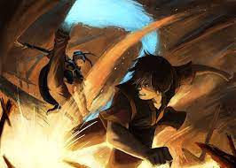

Task 1

An image depicting the fight between Zuko and Azula, a metaphor for the good and evil at war within us all
Task 2
A sad song that plays to highlight that this fight between brother and sister is not exciting, but instead heartbreaking
Task 3